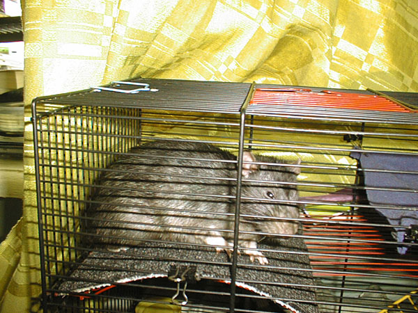

Мулька Шилохвост
Январь 2005

— Куда бы пойти?
Февраль 2005

— А у меня в клетке — ковровое покрытие!

— И гамак! Нет, покрытие! Нет, гамак! Да где же отдохнуть-то?!

— Это как правильно называется — книксен или реверанс?
11 апреля 2005

— Дай подремать, а?